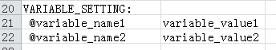
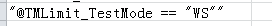
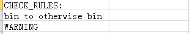
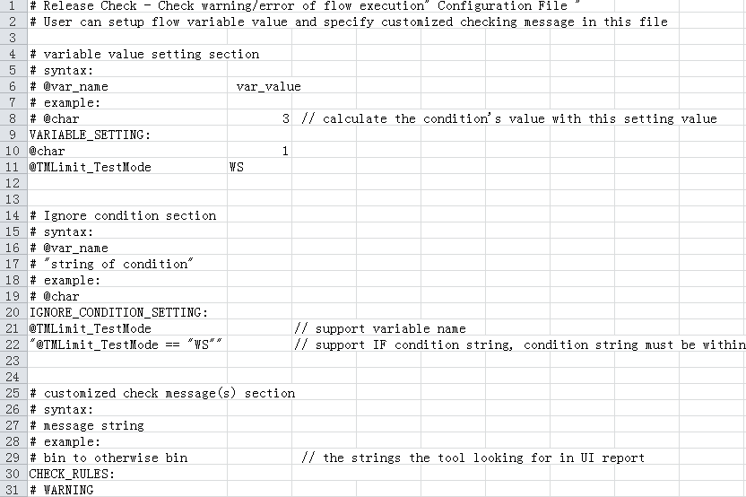

CSV rule file for flow execution
To check with normal flow execution, check with full coverage flow execution, and check with conditional flow execution with Smart correlation – Release Checker, you must prepare a CSV file that defines the checking rules.
Symbol #
Lines beginning with character "#" are comment lines and are ignored by the tool.
Section
There are 3 sections
- VARIABLE_SETTING section
It is used to only define the flow variable value for the function check with conditional flow execution. The other functions ignore this setting. You can define a variable value by following the formats below:
- First column: character "@"+ variable name
- Second column: variable value

- IGNORE_CONDITION_SETTING section
It is only used to define ignore condition variables for the function check with full coverage of flow execution. Two types of formats are supported:
- Variable name:
- Condition string within "":

- Variable name:
- CHECK_RULES section
It is used to define customized highlight messages for the functions:
- check with normal flow execution
- check with full coverage of flow execution
- check with conditional flow execution
You can define the checking messages by following the formats below:

Example
The following screenshot is an example of a configuration CSV file:

Functional changes
- Introduced in SmarTest 7.3.2